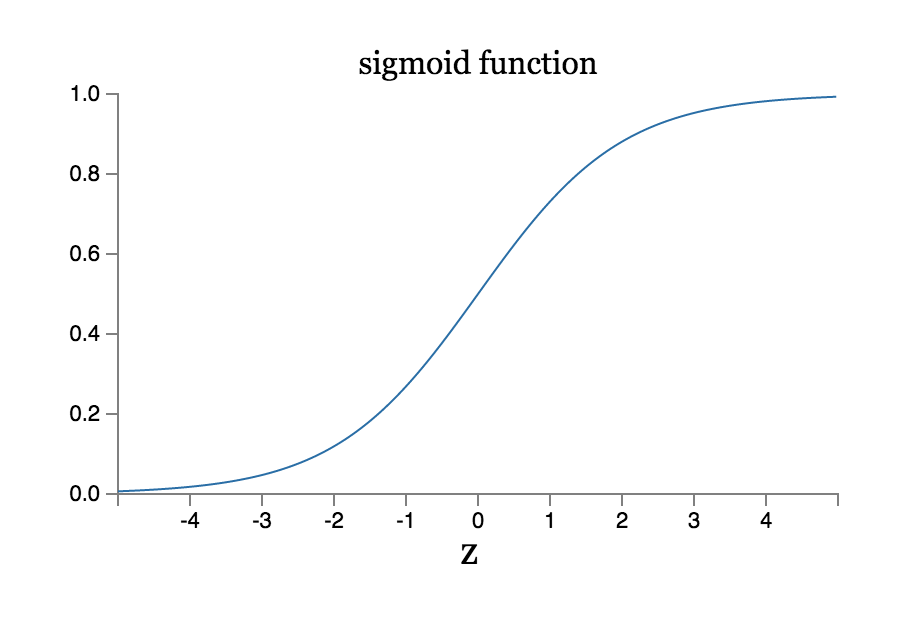

When I just started reading about Deep learning, a common thread I kept noticing was the usage of Sigmoid Neurons. It took quite a bit of intuition to figure this out. In fact, I even played around with a couple of different activation functions before slowly figuring out the simplistic beauty of the sigmoid. Today, I came aross the Neural Networks and Deep Learning online book, and it did an excellent job of explaining the same:
For learning purposes, we want one key characteristic of our function:
We'd like the network to learn weights and biases so that the output from the network correctly classifies the digit. To see how learning might work, suppose we make a small change in some weight (or bias) in the network. What we'd like is for this small change in weight to cause only a small corresponding change in the output from the network.
And as we know, perceptrons don’t work that way!
The problem is that this isn't what happens when our network contains perceptrons. In fact, a small change in the weights or bias of any single perceptron in the network can sometimes cause the output of that perceptron to completely flip, say from 0 to 1.
And which is an almost perfect activation function for the use case we have?
What about the algebraic form of What about the algebraic form of σ? How can we understand that? In fact, the exact form of σ isn't so important - what really matters is the shape of the function when plotted. Here's the shape:

The Sigmoid Function
If σ had in fact been a step function, then the sigmoid neuron would be a perceptron, since the output would be 1 or 0 depending on whether w⋅x+bw⋅x+b was positive or negative. [...] The smoothness σ means that small changes Δwj in the weights and Δb in the bias will produce a small change Δoutput in the output from the neuron.
Such a beautiful function explained so eloquently. I’d suggest reading the book for people just getting their feet wet in the field! It’s an amazing resource!